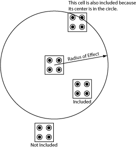

Total Simulation Time
The total duration of the simulation. Be careful not to set this to large
if your time step is too small because the simulation
may take days! The total number of samples = total simulation time / time
step.
Clock Signal
The clock signal in QCADesigner is calculated
as a hard-saturating cosine as shown below. The clock signal is tied directly
to the tunneling energy in the Hamiltonian.

Clock High/Clock Low
Clock low and high values are the saturation energies for the clock signal.
When the clock is high the cell is unlatched. When it is low the cell
is latched. The defaults seem to work in most cases, however, you may
wish to play with them.
Clock Shift
The clock shift allows you to add a positive or negative offset to the
clock as shown in the above figure.
Clock Amplitude Factor
Clock amplitude factor is multiplied by (Clock High - Clock Low) and
reflects the amplitude of the underlying cosine as shown in the above
figure.
Radius of Effect
Because the interaction effect of one cell onto another decays inversely with
the fifth power of the distance between cells, we do not need to consider
each cell as effecting every other cell. This number determines how far
each cell will look to find its neighbors. Make sure that at least the
next-to-nearest neighbors are included in this radius. If you only allow
for the nearest neighbor then I would not expect designs with coplanar
crossovers to work. The following figure should help clear this up.

Note that with multilayer capability the radius of effect
is extended into the third dimension. Therefore in order to include
cells in adjacent layers, make sure that the layer
separation is less than the radius of effect.
Relative Permittivity
The relative permittivity of the material system you want to simulate.
For GaAs/AlGaAs it is roughly 12.9 which is the default value. This is
only used in calculating the kink energy.
Layer Separation
When simulating multilayer QCA circuits, this determines the physical
separation between the different cell layers in [nm].
Euler Method/Runge Kutta
Two different algorithms used to evaluate the differential equation.
Randomize Simulation Order
When active, the order in which cells are simulated is randomized in
each iteration. I recommend leaving this on.
Animate
When active, the circuit will be animated throughout the simulation.
If you zoom into the cells during the simulation you will notice that
the polarization of the cells change.
References